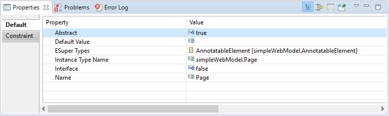
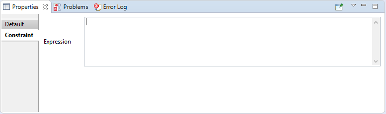
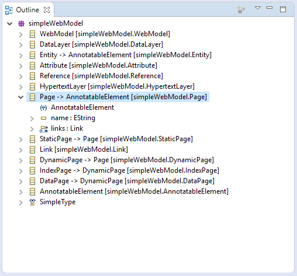
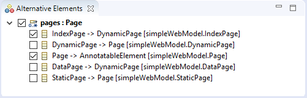

The Properties View shows the properties of the current selection.
The tab "Default" shows the default properties of the element. It is always visible.
The properties are read-only when the Configuration-tab is not active in the Configuration Editor.
The tab "Constraint" allows customization of the slicing constraint for the selected element and is only shown when a Model-tab is active in the Configuration Editor and the selected element is included in the configuration (checked).
Syntax help is provided while editing the constraint.
A constraint interpreter must be set for the configuration for syntax help and constraints to work.
The Outline View shows the contents of the active tab of the Configuration Editor.
For the imported models the outline view also shows the elements that are hidden in the Configuration Editor (e.g. attributes).
The Alternative Elements View shows the elements that can be selected for a reference.
A reference must be selected in a Model-tab of the Configuration Editor. The selected reference is the root element of the view. The elements below the root element are all classes in the current model that are subclasses of the referenced type or the type itself.
The elements can directly be added and removed from the configuration by using the checkboxes.
